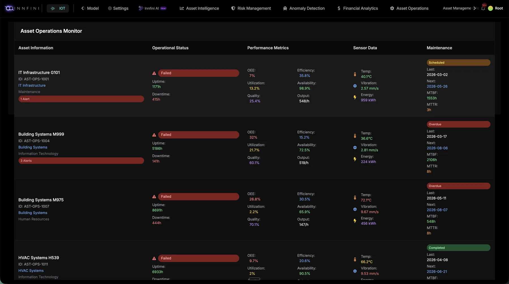

The Asset Dashboard unifies Asset Registry, Maintenance, Preventive Maintenance and Track & Trace into a single 360° profile. Identity, financial position, operational health and live location — all tied to the same record, with full audit history.
360°
Asset profile
Linked
Finance + ops
Full
Audit trail
RegistryMaintenancePreventiveTrack & Trace
// Four capabilities · one record
Asset Registry. Maintenance. PM. Track & Trace.
The Asset Dashboard rolls every asset capability onto one identifier — so finance, operations, maintenance and field teams work from the same record, with no spreadsheets and no reconciliation.
01 · Registry
Asset Registry
Every asset has identity — name, ID, RFID tag, barcode, serial, category, criticality, owner, lifecycle stage and warranty.
RFID · barcode · serial
Owner + department
Lifecycle + warranty
02 · Maintenance
Maintenance
Live work orders, technician assignments, parts, SLA timers, calibration, repair history — directly linked to each asset.
WO + SLA timer
Technician routing
Parts + spend
03 · Preventive
Preventive Maintenance
Scheduled PM, forecast-driven maintenance, MTBF / MTTR tracking, sensor-triggered tasks — predict before it fails.
Schedule + forecast
MTBF · MTTR
Sensor-triggered tasks
04 · Track & Trace
Track & Trace
Real-time location across RFID gates, BLE zones and GPS. Full movement timeline, dwell time, audit trail.
Every asset, with its full financial position. Yearly + monthly depreciation trends, total depreciation, average per asset, YoY growth and a 116-asset inventory mix by type (IT, furniture, printing). Cost vs. Net Book Value broken down by department — Sales, Admin, Marketing, IT, HR, Legal, R&D and 12 more. The Asset Registry isn't just a list — it's the live financial picture of the asset estate.
Drill into any single asset — across finance, ops and performance. Per asset: original cost, current value, residual, useful life, depreciation method (Units of Production, Sum of Years, Straight Line), annual + total depreciation, maintenance spend, operational cost, TCO, ROI, utilization and revenue contribution. The same record drives the maintenance ledger, the PM schedule and the live track-and-trace position.
Asset Operations Monitor · live operational status & preventive maintenanceMaintenance + Preventive

Where Maintenance and Preventive Maintenance live. Operational status (Failed / Healthy), uptime, downtime, alerts; performance metrics (OEE, utilization, quality, efficiency, availability, output); sensor data (temperature, vibration, energy); and PM cadence — last completed, next scheduled, MTBF, MTTR and overdue badges. One row per asset; one click into the asset dashboard for the full timeline.
Where new assets enter the registry. Track department requests, approvals and spend at a glance — total requests, pending, approved, urgent, rejected, avg value. Every requisition links to the asset class it's procuring, so as soon as goods arrive they're registered against the same record, with their RFID tags and serials already mapped. Procurement, finance and ops working from one shared lifecycle.
// Why Asset Dashboard matters
One profile. Every answer.
01 · Registry
Single Source
One asset record replaces the ERP master, the maintenance log and the spreadsheet — everywhere on the platform.
02 · Maintenance
Work-Order Linked
Every WO, technician, part and SLA timer attached to the asset it touches — no orphaned work.
03 · Preventive
Predict, Don't React
Schedule, forecast and sensor-trigger PM tasks — MTBF + MTTR improve every quarter.
04 · Track & Trace
Always Locatable
RFID, BLE and GPS feed the live position — with full audit timeline of every move.
Asset Dashboard gives every asset a complete digital twin — registry, maintenance, preventive maintenance and live track-and-trace, all rooted in one record, all audit-grade.
See the asset profile on your fleet.
A live walkthrough mapped to your asset master, your sensors and your work-order system.